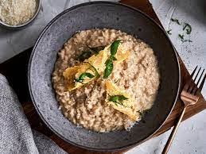

Risotto

Risotto is an Italian dish made by cooking a starchy, short grain rice like arborio with stock until it becomes creamy. When you serve it on a plate, risotto should spread out into a silky, spoonable pool.
- 1 tbsp olive oil, plus a drizzle for the pumpkin
- 2 garlic cloves
- 8 spring onions
- 25g butter
- 25g butter
- Heat oven to 180C/160C fan/ gas 4. Chop up the pumpkin or squash into 1.5cm cubes (kids- ask for help if it’s slippery). Put it on a baking tray, drizzle over some oil, then roast for 30 mins.
- While the pumpkin is roasting, you can make the risotto. Put the garlic in a sandwich bag, then bash lightly with a rolling pin until it’s crushed.
- Cut up the spring onions with your scissors.
- Heat 1 tbsp oil with the butter in your pan over a medium heat – not too hot. Add the spring onions and garlic. Once the onions are soft but not getting brown, add the rice and cumin. Stir well to coat in the buttery mix for about 1 min.
- Now add half a cup of the stock, and stir every now and then until it has all disappeared into the rice. Carry on adding and stirring in a large splash of stock at a time, until you have used up all the stock – this will take about 20 mins.
- Check the rice is cooked. If it isn’t, add a splash more stock, and carry on cooking for a bit. Once the rice is soft enough to eat, gently stir in the grated cheese, chopped coriander and roasted pumpkin.